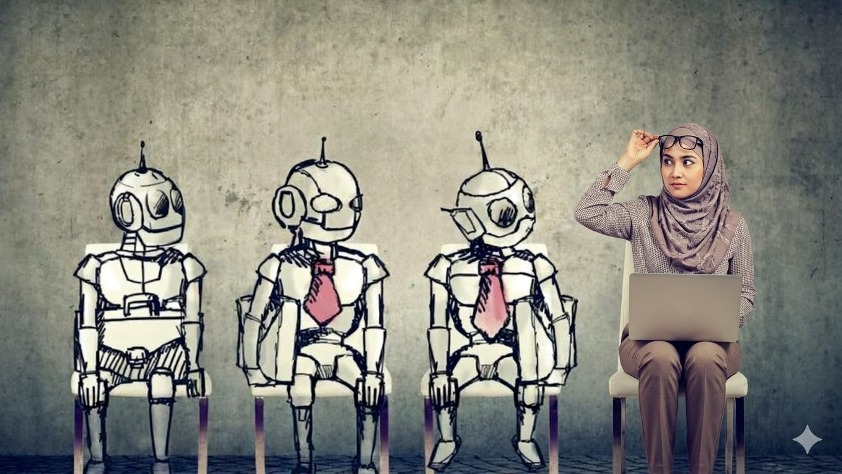

SESI 4 · LATIHAN PENYUNTINGAN IMEJ
Daripada imej asal kepada mesyuarat tahun 2050.
Muat naik imej asal dan potret anda ke Google Gemini. Laksanakan satu perubahan pada setiap langkah supaya identiti, objek dan komposisi kekal terkawal.

PERSEDIAAN & KAWALAN
Sediakan dua imej sebelum bermula
Gunakan perbualan yang sama dan teruskan daripada hasil langkah sebelumnya. Simpan satu salinan selepas setiap langkah.
Penggunaan bertanggungjawab: Gunakan foto diri
sendiri atau foto yang mendapat kebenaran. Jangan meniru identiti
orang lain. Jika wajah, bilangan aktor atau objek berubah tanpa
diminta, kembali ke hasil sebelumnya dan jana semula.
ALIRAN LATIHAN
11 langkah suntingan terkawal
Empat langkah pertama membina adegan. Langkah seterusnya menyatukan gaya, menguatkan cerita dan mengaudit hasil.
1Ganti aktor2Robot tengah3Bilik 20504Robot sisi5Cahaya6Cerita7Interaksi8Komposisi9Audit10Baiki11Video
PROMPT LANGKAH DEMI LANGKAH
Salin, jana dan semak satu demi satu
Jangan gabungkan semua prompt. Muat turun hasil yang diluluskan sebelum meneruskan ke langkah berikutnya.
Gantikan wanita dengan gambar anda
Input: Muat naik imej asal sebagai Imej 1 dan potret anda sebagai Imej 2.
Gunakan Imej 1 sebagai imej sasaran dan Imej 2 sebagai rujukan identiti saya. Gantikan HANYA wanita yang duduk di kerusi paling kanan dalam Imej 1 dengan diri saya daripada Imej 2. Kekalkan wajah dan ciri identiti saya dengan tepat. Letakkan saya dalam posisi duduk yang semula jadi sambil memegang komputer riba. Laraskan ketinggian dan saiz badan supaya sepadan dengan perspektif kerusi serta tiga robot di sebelah kiri. Gunakan pakaian profesional dan sopan yang konsisten dengan potret rujukan. Jangan ubah tiga robot, tali leher, empat kerusi, komputer riba, latar belakang, susunan, pencahayaan, nisbah 16:9 atau sudut kamera. Jangan tambah teks, logo, manusia atau objek baharu.
Jadikan robot tengah realistik
Edit HANYA robot yang duduk di tengah, iaitu robot kedua dari kiri. Tukarkan gaya lakarannya kepada robot humanoid sebenar yang fotorealistik. Kekalkan bentuk dan siluet asal, saiz kepala, antena, susunan sendi, posisi duduk, arah pandangan dan TALI LEHER merah jambu. Gunakan bahan logam putih dan perak dengan perincian mekanikal yang meyakinkan. Jangan ubah dua robot di kiri dan kanan, diri saya, wajah saya, pakaian, komputer riba, empat kerusi, latar belakang, komposisi, pencahayaan atau nisbah imej.
Tukar latar kepada bilik mesyuarat 2050
Gantikan HANYA latar belakang dengan bilik mesyuarat profesional pada tahun 2050 di Fakulti Komputeran, UTM. Gunakan seni bina moden, dinding kaca pintar, permukaan digital dan pencahayaan lembut bernuansa futuristik. Paparan holografik boleh kelihatan samar tetapi tanpa teks yang boleh dibaca. Kekalkan semua empat aktor pada kedudukan, saiz, pose dan arah pandangan yang sama. Kekalkan identiti wajah saya, reka bentuk setiap robot, semua tali leher, empat kerusi dan komputer riba. Jangan ubah latar hadapan, sudut kamera atau nisbah 16:9. Jangan tambah logo atau individu lain.
Ubah dua robot sisi
Edit HANYA robot pertama dari kiri dan robot ketiga dari kiri supaya menjadi robot humanoid sebenar yang fotorealistik. Robot kiri mesti mempunyai panel badan berwarna biru; robot kanan mesti mempunyai panel badan berwarna hijau. Kekalkan bentuk asas, antena, proporsi, posisi duduk, arah pandangan dan tali leher masing-masing seperti imej semasa. Pastikan bahan serta tahap realisme sepadan dengan robot tengah. Jangan ubah robot tengah, diri saya, wajah, pakaian, komputer riba, kerusi, bilik mesyuarat 2050, susunan, kamera atau nisbah imej.
Selaraskan cahaya dan bayang
Lakukan penyelarasan visual sahaja supaya semua elemen kelihatan benar-benar berada dalam bilik yang sama. Padankan arah dan suhu cahaya, bayang sentuhan di bawah kaki dan kerusi, pantulan pada badan robot, tona kulit, kedalaman ruang serta ketajaman. Jangan mengubah wajah atau identiti saya, pakaian, pose, bentuk dan warna robot, tali leher, bilangan aktor, empat kerusi, komputer riba, latar, susunan atau sudut kamera. Tiada objek baharu.
Jelaskan cerita dan objektif mesyuarat
Kuatkan penceritaan visual bahawa adegan ini ialah mesyuarat kerja manusia bersama pasukan AI pada tahun 2050. Tambahkan HANYA satu paparan holografik kecil dan elegan berhampiran ruang tengah yang menunjukkan bentuk visual abstrak aliran kerja, keputusan dan kemajuan. Jangan gunakan perkataan, nombor atau logo yang boleh dibaca. Kekalkan saya dan ketiga-tiga robot, wajah, pakaian, warna robot, tali leher, pose, empat kerusi, komputer riba, bilik, pencahayaan dan komposisi tanpa perubahan lain. Hasil mesti profesional, objektif dan tidak kelihatan seperti fiksyen aksi.
Bina interaksi yang semula jadi
Ubah HANYA arah pandangan dan bahasa badan secara halus untuk menunjukkan saya sedang mengetuai perbincangan dan tiga robot sedang memberi perhatian. Kekalkan semua aktor duduk pada kerusi yang sama. Gunakan gerak tangan yang minimum, ekspresi profesional dan suasana kolaboratif. Jangan ubah identiti atau ciri wajah saya, pakaian, bentuk dan warna robot, tali leher, bilangan anggota badan, komputer riba, kerusi, paparan holografik, latar, pencahayaan atau sudut kamera. Elakkan pose kaku atau anggota badan tambahan.
Kemaskan komposisi akhir
Kemaskan imej sebagai visual promosi profesional berformat landskap 16:9. Seimbangkan ruang di kiri dan kanan, pastikan empat aktor kelihatan penuh dan tidak terpotong, garisan perspektif lurus serta fokus visual jelas pada pasukan mesyuarat. Kekalkan identiti, reka bentuk robot, warna biru dan hijau, semua tali leher, empat kerusi, komputer riba, paparan holografik dan bilik mesyuarat. Jangan tambah teks, tajuk, logo, bingkai atau tera air. Jangan mengubah cerita adegan.
Audit perubahan sebelum membaiki
Jangan sunting imej lagi. Bandingkan hasil semasa dengan Imej 1 dan potret rujukan Imej 2. Audit ketepatan imej dalam jadual dengan lajur: perkara diperiksa, keadaan yang dikehendaki, keadaan semasa, status LULUS/TIDAK LULUS, tahap isu dan pembetulan khusus. Semak sekurang-kurangnya: identiti wajah; ketinggian dan proporsi saya; tiga robot; robot tengah fotorealistik dan bertali leher; robot kiri biru; robot kanan hijau; empat kerusi; komputer riba; bilangan anggota badan; bilik mesyuarat 2050; cahaya dan bayang; paparan holografik; nisbah 16:9; serta ketiadaan teks, logo dan objek tidak diminta. Akhiri dengan senarai pembetulan mengikut keutamaan.
Laksanakan pembetulan akhir
Gunakan audit terakhir dan baiki HANYA perkara berstatus TIDAK LULUS. Utamakan ketepatan identiti wajah, anatomi, proporsi, bilangan aktor, warna robot, tali leher, kerusi, komputer riba, perspektif, cahaya dan bayang. Jangan memperkenalkan idea, objek, teks, logo atau perubahan gaya baharu. Kekalkan semua bahagian yang telah berstatus LULUS. Hasilkan versi akhir berkualiti tinggi, fotorealistik, bersih dan profesional dalam nisbah 16:9.
Pengayaan: gerakkan imej selama 10 saat
Pilihan: Gunakan alat imej-ke-video selepas imej akhir diluluskan.
Jadikan imej akhir ini video sinematik selama 10 saat tentang mesyuarat manusia dan AI pada tahun 2050. Kekalkan kamera hampir statik dengan gerakan dolly masuk yang sangat perlahan. Wujudkan gerakan kecil dan semula jadi: saya mengangguk sekali, robot mengalihkan pandangan secara halus, lampu indikator berkelip perlahan dan paparan holografik bergerak lembut. Kekalkan identiti wajah, pakaian, bentuk dan warna setiap robot, tali leher, empat kerusi, komputer riba, latar dan komposisi. Tiada dialog, teks, logo, perubahan wajah, pertukaran warna, pergerakan mendadak, anggota tambahan atau objek baharu. Bingkai awal dan akhir mesti stabil.
HASIL PEMBELAJARAN
Semak sebelum menyerahkan tugasan
Serahan: Imej asal, potret rujukan, hasil Langkah
4, imej akhir, jadual audit dan satu refleksi ringkas tentang prompt
yang paling banyak membantu.